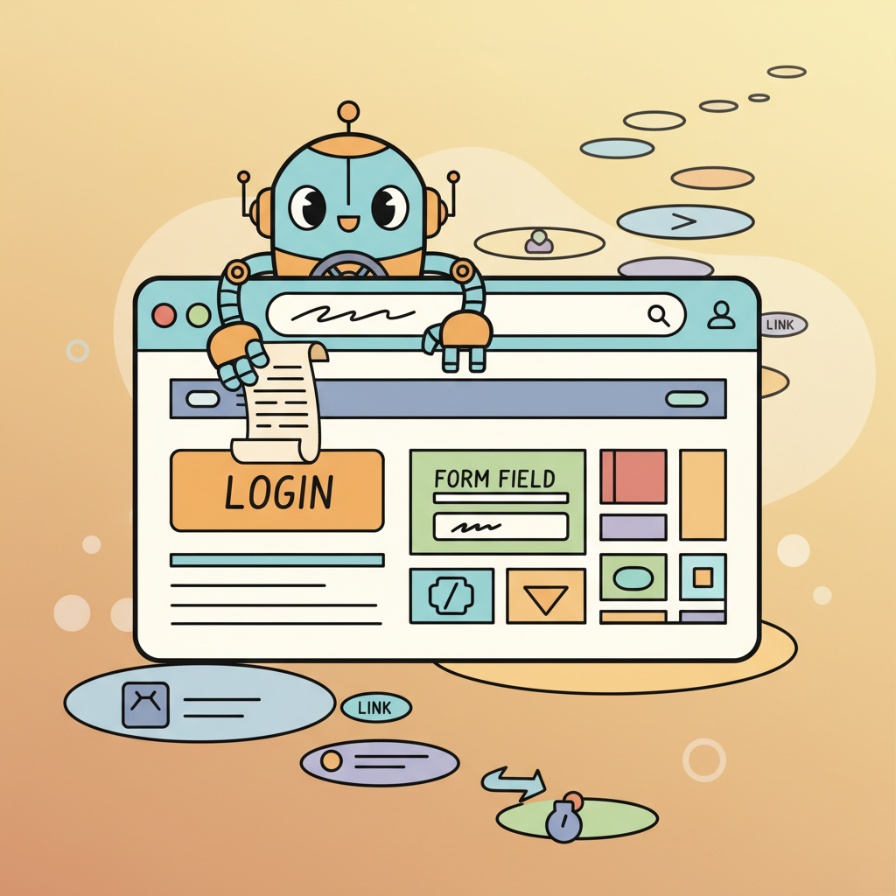

"The web was designed for humans. I navigate it anyway, one screenshot at a time."
Pixel, Pixel-Parsing AI Agent
Most of the world's workflows live behind web interfaces, not APIs. Browser agents navigate pages, fill forms, click buttons, and extract information autonomously, unlocking automation for enterprise systems, government portals, and legacy applications that offer no programmatic access. The architecture combines an LLM for decision-making with browser automation (Playwright, Puppeteer) for execution, creating a perceive-decide-act loop over web page state. This section covers DOM-based and vision-based page representation, the WebArena benchmark for evaluation, and practical frameworks including Playwright MCP and Browser Use.
Prerequisites
This section builds on agent foundations from Chapter 22, tool use from Chapter 23, and multi-agent patterns from Chapter 24.
This section includes a hands-on lab: Lab: Browser Automation Agent with Playwright MCP. Look for the lab exercise within the section content.

25.2.1 Browser Agents: The Web as a Tool
Browser agents extend the agent paradigm to web interaction. Instead of calling APIs, these agents navigate web pages, fill forms, click buttons, extract information, and complete multi-step web workflows autonomously. This capability is transformative for tasks that lack APIs: many enterprise systems, government portals, and legacy applications are only accessible through their web interfaces.
The architecture of a browser agent combines an LLM for decision-making with a browser automation library (typically Playwright or Puppeteer) for execution. At each step, the agent observes the current page state (DOM structure, visible text, interactive elements), decides what action to take (click, type, scroll, navigate), and executes that action. The cycle repeats until the task is complete. The key challenge is representing the web page in a format the LLM can reason about effectively, since raw HTML is often too verbose and noisy for direct consumption.
The Playwright MCP server has emerged as the standard interface for browser agents. It exposes browser interactions as MCP tools: navigate to URL, click element, fill input, take screenshot, extract text. Any MCP-compatible agent can control a browser through this standardized interface without implementing browser automation code directly. The browser-use Python library and Stagehand TypeScript SDK provide higher-level abstractions that simplify common patterns like form filling and data extraction.
Browser agents work best with accessibility-based page representation rather than raw HTML. The accessibility tree (used by screen readers) provides a structured, concise representation of interactive elements with their labels, roles, and states. An accessibility tree might be 1/100th the size of the raw HTML while containing all the information the agent needs to interact with the page. Libraries like browser-use extract this representation automatically.
Browser Agent with Playwright MCP
This snippet connects an agent to a browser via the Playwright MCP server for automated web interaction.
# Using Playwright MCP tools in an agent
from anthropic import Anthropic
client = Anthropic()
# Define browser tools (provided by Playwright MCP server)
browser_tools = [
{"name": "navigate", "description": "Navigate to a URL"},
{"name": "click", "description": "Click an element by selector or text"},
{"name": "fill", "description": "Fill an input field with text"},
{"name": "screenshot", "description": "Take a screenshot of the current page"},
{"name": "get_text", "description": "Extract visible text from the page"},
]
async def browser_agent(task: str):
messages = [{"role": "user", "content": task}]
while True:
response = client.messages.create(
model="claude-sonnet-4-20250514",
max_tokens=4096,
system=(
"You are a browser automation agent. You can navigate web pages, "
"click elements, fill forms, and extract information. "
"Use the provided browser tools to complete the user's task. "
"Take a screenshot after important actions to verify the result."
),
tools=browser_tools,
messages=messages,
)
# Process tool calls
if response.stop_reason == "tool_use":
tool_results = []
for block in response.content:
if block.type == "tool_use":
result = await execute_browser_tool(block.name, block.input)
tool_results.append({
"type": "tool_result",
"tool_use_id": block.id,
"content": result,
})
messages.append({"role": "assistant", "content": response.content})
messages.append({"role": "user", "content": tool_results})
else:
return response.content[0].text # Final responseThe same browser automation in 5 lines with browser-use (pip install browser-use):
from browser_use import Agent
from langchain_openai import ChatOpenAI
agent = Agent(
task="Go to amazon.com, search for 'wireless headphones', extract the top 3 results with prices",
llm=ChatOpenAI(model="gpt-4o"),
)
result = await agent.run()
print(result)Browser agents are powerful for interactive, multi-step workflows (filling forms, navigating menus, completing transactions). However, they are a poor choice for high-volume data extraction tasks where traditional web scraping tools (Beautiful Soup, Scrapy, direct API calls) are faster, cheaper, and more reliable. Each browser agent step involves an LLM call (latency and cost) and a real browser action (rendering overhead). Scraping 10,000 product pages through a browser agent could cost hundreds of dollars in API fees and take hours; a Scrapy spider can do the same in minutes for pennies. Use browser agents for tasks that require reasoning and decision-making; use traditional scraping for repetitive data extraction.
25.2.2 WebArena Patterns and Challenges
WebArena, the standardized benchmark for web agents, reveals the core challenges of browser automation. Tasks range from simple (find a product and add it to the cart) to complex (compare prices across multiple stores, apply a discount code, and verify the total). Top agents achieve roughly 30 to 40% success on WebArena tasks, well below human performance, highlighting how much room for improvement remains.
The most common failure modes are: misidentifying the correct element to interact with (clicking the wrong button among many similar options), losing track of the task during multi-step navigation (forgetting what information was found on a previous page), and failing to handle dynamic content (pop-ups, loading spinners, lazy-loaded content). Effective browser agents mitigate these through screenshot verification (take a screenshot after each action to confirm the result), explicit state tracking (maintain a summary of progress and gathered information), and retry logic (if an element is not found, wait and retry rather than failing immediately).
Who: A competitive intelligence analyst at a consumer electronics retailer tracking prices across Amazon, Best Buy, Walmart, Newegg, and B&H Photo.
Situation: The analyst manually checked competitor prices for 50 key products every morning, a process that took 3 hours and was error-prone. Management wanted daily updates but the manual process could not scale.
Problem: Traditional web scraping with CSS selectors broke every 2 to 3 weeks as retailers updated their page layouts. The team had already abandoned two Selenium-based scrapers that required constant maintenance.
Decision: The team deployed a Playwright-based browser agent that used text-based element identification (searching for price patterns near product titles) rather than CSS selectors. For pages where text extraction failed (JS-rendered elements, pop-ups), the agent fell back to screenshot analysis using a vision model to read prices from the rendered page.
Result: The agent achieved a 95% daily extraction success rate across all 250 product-site combinations. Layout changes that previously required manual scraper fixes were handled automatically by the text-based approach. The analyst's morning price check dropped from 3 hours to a 15-minute review of the agent's report.
Lesson: Browser agents that identify elements by semantic content rather than structural selectors are far more resilient to website changes than traditional web scrapers.
Lab: Browser Automation Agent with Playwright MCP
Lab: Build a Browser Agent with Playwright MCP
Objective
Build a browser agent that can navigate web pages, extract information, and complete multi-step web tasks using the Playwright MCP server.
What You'll Practice
- Setting up a Playwright MCP server and connecting it to an LLM agent
- Implementing multi-step web navigation and structured data extraction
- Handling failure modes: missing elements, loading delays, pop-up dialogs
- Using screenshot verification to confirm action results
Setup
The following cell installs the required packages and configures the environment for this lab.
pip install playwright openai
playwright install chromiumYou will need the Playwright MCP server and an OpenAI API key.
Steps
Step 1: Set up Playwright MCP and the agent
Configure the MCP server with browser tools (navigate, click, type, screenshot) and connect it to the LLM agent.
# TODO: Initialize Playwright browser and define MCP tool schemas
# Tools: navigate(url), click(selector), type(selector, text), screenshot()Step 2: Implement web navigation and extraction
Build a task that navigates to a website, performs a search, and extracts structured data from the results.
# TODO: Implement the navigation task with the agent
# Example: search for a product, extract name, price, and ratingStep 3: Handle failure modes
Add error handling for elements not found, page loading delays, and pop-up dialogs that block interaction.
# TODO: Add try/except around tool calls, implement wait-and-retry
# Handle cookie banners, modal dialogs, and timeout errorsStep 4: Add screenshot verification
After each major action, take a screenshot and pass it to the LLM to verify the action succeeded before proceeding.
# TODO: Take screenshot after each action, send to vision model
# for verification before proceeding to the next stepExpected Output
- A working browser agent that completes a multi-step web task end-to-end
- Structured data extracted from web pages in JSON format
- Screenshots showing the agent's progress at each step
Stretch Goals
- Add support for filling out multi-page forms with validation
- Implement a comparison task: navigate two competitor sites and create a structured comparison
- Add an accessibility-based selector strategy as fallback when CSS selectors fail
Complete Solution
# Complete solution outline for the browser agent
# Key components:
# 1. Playwright browser setup and MCP tool definitions
# 2. Agent loop with tool calling and result parsing
# 3. Error handling with retry and fallback strategies
# 4. Screenshot-based verification using a vision model
# See the Playwright MCP documentation for server setup.Exercises
Describe the key components of a browser agent. What observations does it receive, what actions can it take, and how does it maintain state across page navigations?
Answer Sketch
Observations: page HTML (or a simplified DOM), screenshots, accessibility tree, current URL. Actions: click, type, scroll, navigate, wait, extract text. State is maintained through a combination of the conversation history (recording past actions and observations) and browser state (cookies, session storage). The agent must handle dynamic content loading and page transitions.
Write a simple browser automation script using Playwright that navigates to a search engine, enters a query, and extracts the top 3 result titles. Structure it as a tool that an agent could call.
Answer Sketch
Use playwright.chromium.launch(), navigate to the search page, fill the search input, press Enter, wait for results, and extract titles using CSS selectors. Wrap in an async function with clear input (query string) and output (list of title strings) that matches a tool schema. Handle timeouts and missing elements gracefully.
What makes WebArena tasks difficult for current browser agents? Identify three categories of challenges and explain why each is hard.
Answer Sketch
(1) Dynamic content: modern web pages use JavaScript rendering, making the DOM differ from the source HTML. Agents must wait for content to load. (2) Multi-step navigation: reaching the right page may require multiple clicks through menus and filters. (3) Form interaction: filling forms correctly requires understanding field types, validation requirements, and dependent fields (e.g., state dropdown changes based on country selection).
Write a Python function that takes raw HTML and produces a simplified representation suitable for an LLM agent. Remove scripts, styles, and non-interactive elements, keeping only text, links, buttons, and form fields.
Answer Sketch
Use BeautifulSoup to parse HTML. Remove all <script>, <style>, <svg>, and hidden elements. For remaining elements, extract: text content, links (href + text), buttons (text + id), and form fields (type + name + label). Output a numbered list of interactive elements so the agent can reference them by number (e.g., '[3] Button: Submit Order').
List three safety considerations for deploying browser agents and propose a mitigation for each.
Answer Sketch
(1) Unintended purchases or form submissions: require human approval for any action involving payment or form submission. (2) Data leakage: the agent might navigate to pages containing sensitive information; restrict the agent's URL allowlist. (3) CAPTCHA circumvention: attempting to bypass CAPTCHAs violates terms of service; detect CAPTCHAs and escalate to a human.
Research agents can spend minutes exploring irrelevant tangents. Set a wall-clock timeout (30 to 60 seconds) and a maximum number of search queries (5 to 10). This forces the agent to prioritize and prevents runaway costs.
- Browser agents face unique challenges: dynamic content, large action spaces, and the need for visual understanding.
- Playwright MCP standardizes browser automation as a tool service, decoupling browser control from agent logic.
- Combining screenshots with accessibility trees gives agents both visual and structural understanding of web pages.
Show Answer
Browsers present dynamic, visually rendered content that changes over time. Agents must handle page load delays, dynamic JavaScript, varying page layouts, CAPTCHAs, authentication flows, and the vast action space of possible clicks, scrolls, and inputs on any web page.
Show Answer
Playwright MCP wraps the Playwright browser automation library as an MCP server, exposing browser actions (navigate, click, fill, screenshot) as tools that any MCP-compatible agent can call. This separates browser control from the agent logic and provides a standardized interface.
What Comes Next
In the next section, Computer Use Agents, we expand beyond the browser to agents that interact with the full desktop environment through screenshots, mouse clicks, and keyboard input.
References and Further Reading
Web Agent Benchmarks
The standard benchmark for web agents featuring self-hosted realistic websites where agents complete complex multi-step tasks, establishing evaluation methodology for browser agents.
Extends WebArena with visually grounded tasks requiring agents to understand screenshots, images, and visual layouts for web navigation.
Introduces a large-scale dataset of web interaction tasks across diverse websites, providing training and evaluation data for generalizable web agents.
Browser Agent Architectures
Zheng, L., Peng, B., Hu, Z., et al. (2024). "WebGPT-Style Browsing Agents." arXiv preprint.
Surveys approaches to building browsing agents that can search, navigate, and extract information from the web using LLMs as the reasoning backbone.
Browser Use (2024). "Browser Use: Make Websites Accessible for AI Agents." GitHub.
Open-source library for connecting AI agents to web browsers via Playwright, providing the practical infrastructure for building and deploying browser agents.
Demonstrates an end-to-end multimodal web agent using screenshots as input, showing that vision-based navigation can match or exceed DOM-based approaches.